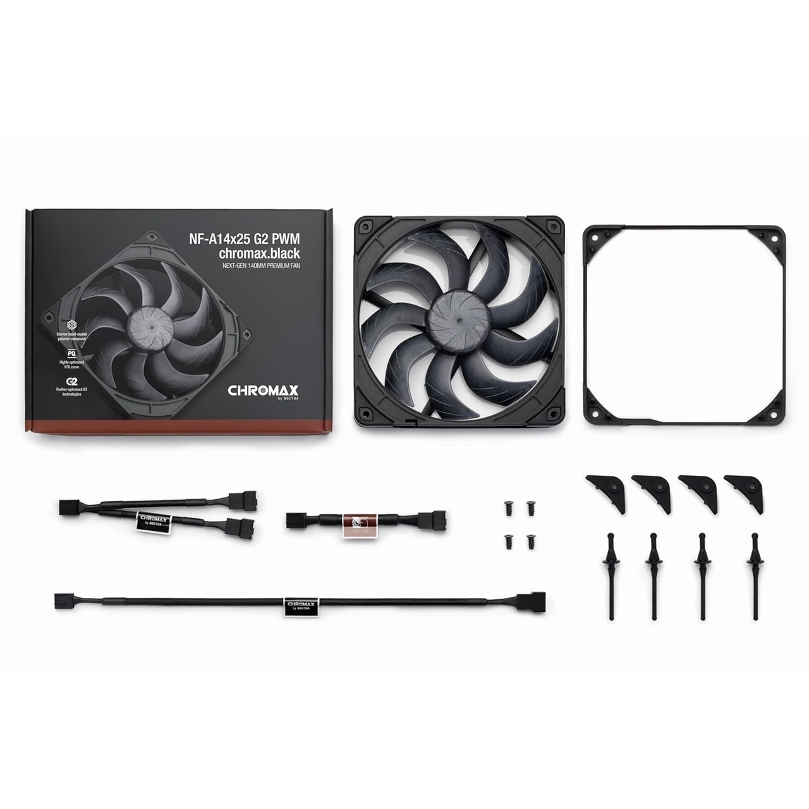

NF-A14x25 G2 — Premium 140mm de nueva generación
Lo mejor que Noctua hace actualmente para 140mm
Tamaño140 x 140 x 25 mm
RPM máx.1500
TipoPremium balanceado G2
ConectorPWM 4 pines
Por qué elegirlo
- Mejor rendimiento térmico que el NF-A14 clásico con menos ruido
- Diseño optimizado para radiadores AIO 280/420 mm
- Versión Sx2-PP (push-pull) ideal para sandwich en radiadores
- Variantes round frame (r) para uso en coolers tower
Para otros usos considera
- Si buscas precio más accesible y rendimiento similar → NF-A14 PWM (clásico)
- Si es para gabinete sin radiador → NF-A14 PWM es suficiente
Variantes disponibles
| SKU | Variante | Aplicación |
|---|---|---|
| NF-A14X25 G2 PWM | Estándar (beige) | Radiador AIO, gabinete premium |
| NF-A14X25 G2 PWM SX2-PP | Pack push-pull | Sandwich en radiador |
| NF-A14x25 G2 PWM CH.BK | Chromax Black | Builds estéticos negros |
| NF-A14x25 G2 PWM Sx2-PP CH.BK | Pack push-pull negro | Sandwich en radiador, build negro |
| NF-A14X25r G2 PWM | Round frame | Coolers tower |
| NF-A14X25r G2 PWM SX2-PP | Round frame push-pull | Cooler tower con doble fan |
| NF-A14x25r G2 PWM CH.BK | Round frame negro | Cooler tower negro |
| NF-A14x25r G2 PWM Sx2-PP CH.BK | Round frame push-pull negro | Cooler tower negro doble fan |